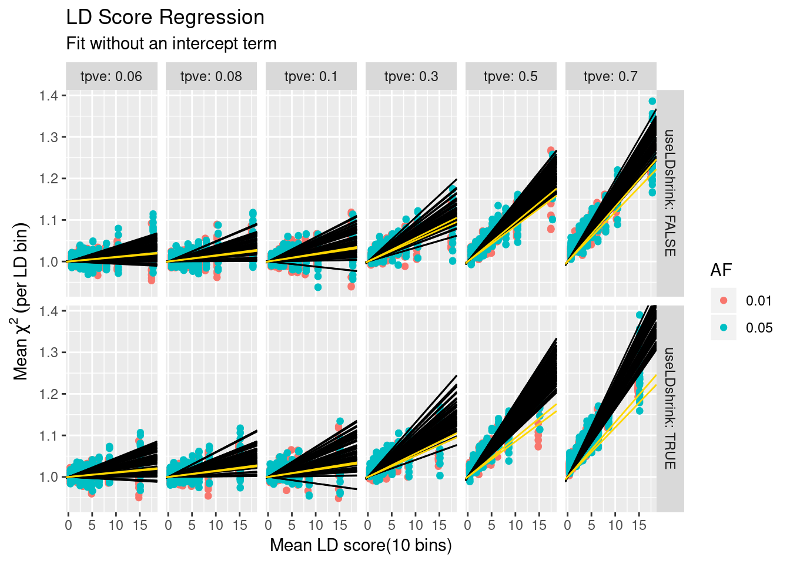
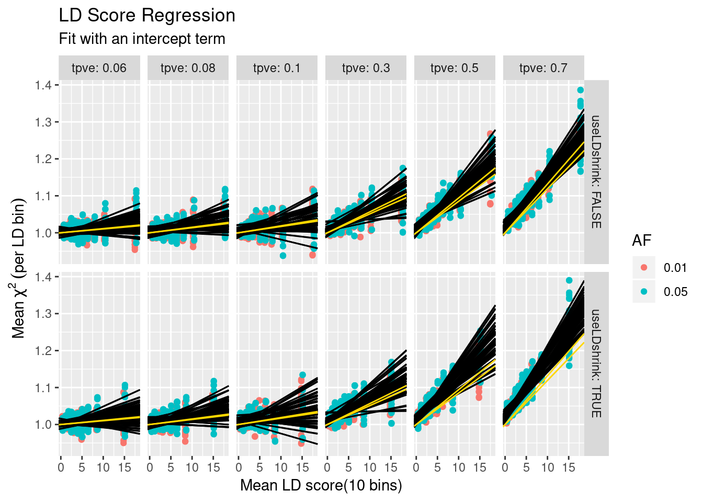
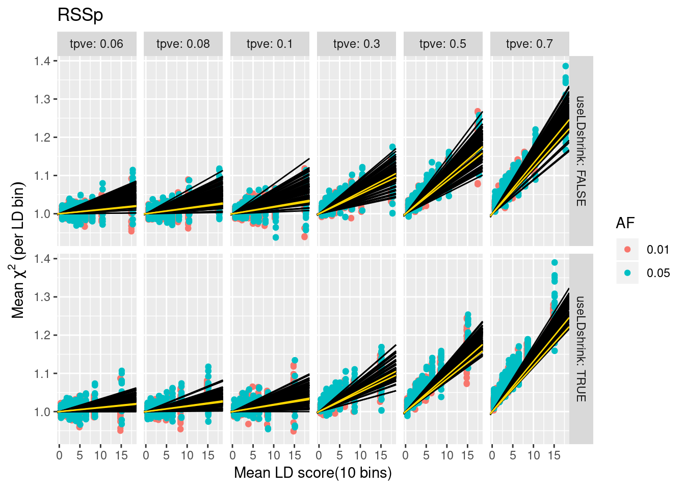
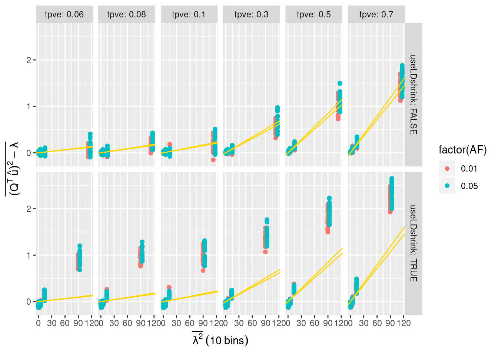
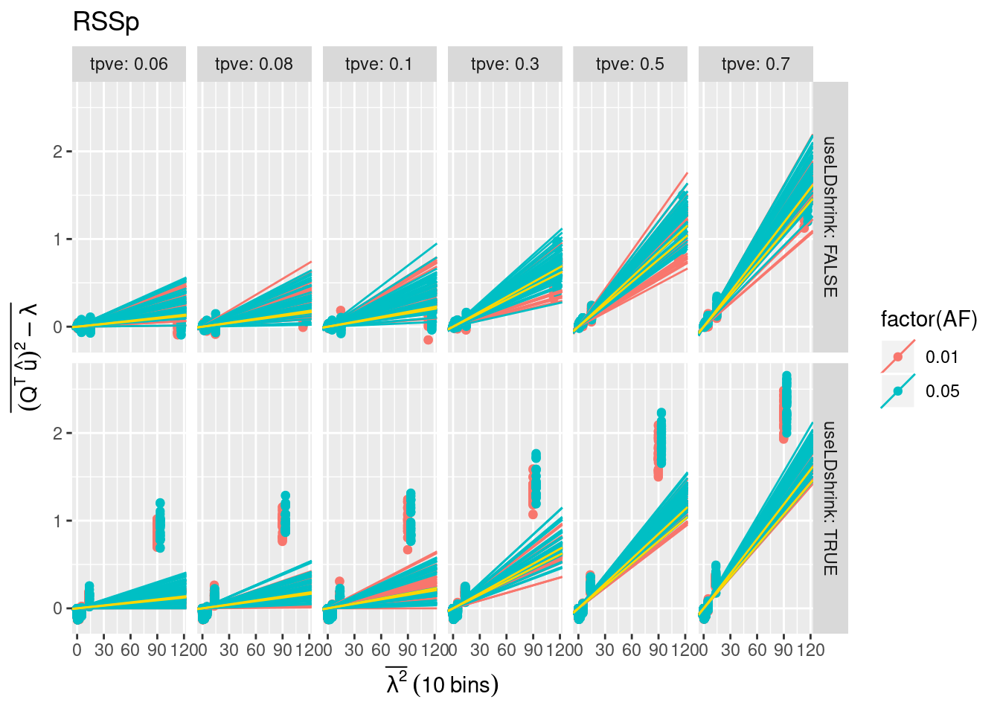
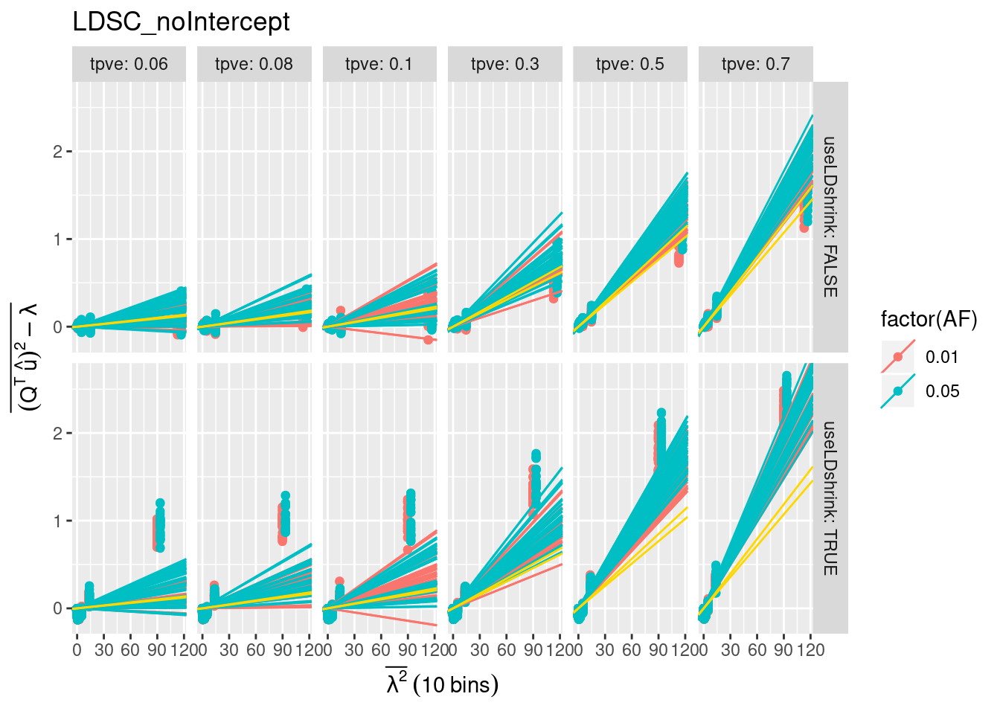
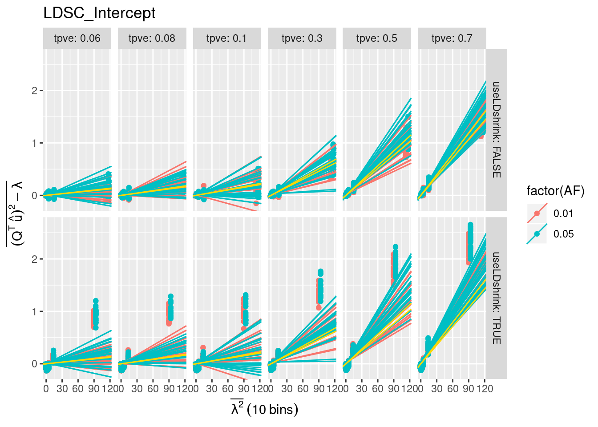
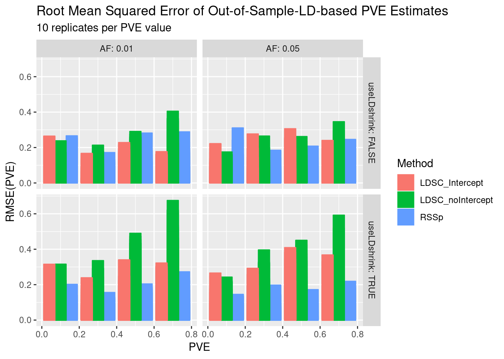

Last updated: 2018-08-01
workflowr checks: (Click a bullet for more information) ✔ R Markdown file: up-to-date
Great! Since the R Markdown file has been committed to the Git repository, you know the exact version of the code that produced these results.
✔ Environment: empty
Great job! The global environment was empty. Objects defined in the global environment can affect the analysis in your R Markdown file in unknown ways. For reproduciblity it’s best to always run the code in an empty environment.
✔ Seed:
set.seed(12345)
The command set.seed(12345) was run prior to running the code in the R Markdown file. Setting a seed ensures that any results that rely on randomness, e.g. subsampling or permutations, are reproducible.
✔ Session information: recorded
Great job! Recording the operating system, R version, and package versions is critical for reproducibility.
✔ Repository version: a800289
wflow_publish or wflow_git_commit). workflowr only checks the R Markdown file, but you know if there are other scripts or data files that it depends on. Below is the status of the Git repository when the results were generated:
Ignored files:
Ignored: .RData
Ignored: .Rhistory
Ignored: .Rproj.user/
Ignored: .httr-oauth
Ignored: analysis/PolygenicEstimation_cache/
Ignored: code/.Rhistory
Ignored: code/scripts/.Rhistory
Ignored: code/snakemake_files/.Rhistory
Ignored: code/snakemake_files/parameter_generation/
Ignored: code/snakemake_files/subset_data_pipeline/.RData
Ignored: data/rep_polygenic/
Untracked files:
Untracked: (dell-desktop's conflicted copy 2018-07-09).RData
Untracked: (dell-desktop's conflicted copy 2018-07-09).Rhistory
Untracked: _workflowr.yml
Untracked: analysis/#RSSp_WTCC_noConfounding.Rmd#
Untracked: analysis/AFvsp.Rmd
Untracked: analysis/DownSamplingResults.Rmd
Untracked: analysis/EVD_SVD.Rmd
Untracked: analysis/GRM_estimation.Rmd
Untracked: analysis/GenomeWideSimulation.Rmd
Untracked: analysis/Heritability.Rmd
Untracked: analysis/LDshrink_effect.Rmd
Untracked: analysis/MeetingSummary1.Rmd
Untracked: analysis/RSSR_PolygenicData.Rmd
Untracked: analysis/RSSp.stan
Untracked: analysis/RSSp2.stan
Untracked: analysis/RSSp_LDshrink.Rmd
Untracked: analysis/RSSp_Large_WTCC_noConfounding.Rmd
Untracked: analysis/RSSp_Largest_Simulation.Rmd
Untracked: analysis/RSSp_WTCC_noConfounding.Rmd
Untracked: analysis/RSSp_ldsc_highPVE_chr1.Rmd
Untracked: analysis/RSSp_ldsc_highPVE_hr.Rmd
Untracked: analysis/RSSp_ldsc_noConfounding.Rmd
Untracked: analysis/Running_ldetect.Rmd
Untracked: analysis/SPVE.Rmd
Untracked: analysis/Summary.Rmd
Untracked: analysis/Summary.org
Untracked: analysis/Vanilla_LDSC.Rmd
Untracked: analysis/chr_16.Rmd
Untracked: analysis/derby.log
Untracked: analysis/fquh_mod.RDS
Untracked: analysis/ltximg/
Untracked: analysis/nquh_mod.RDS
Untracked: analysis/out_res.RDS
Untracked: analysis/pvv_opt.Rmd
Untracked: analysis/quh_mod.RDS
Untracked: analysis/scz_data.org
Untracked: analysis/shrinkage_effect.Rmd
Untracked: code/#workflow_params_bigdata.json#
Untracked: code/#workflow_params_rcc.json#
Untracked: code/.ipynb_checkpoints/
Untracked: code/RSSp_abstract.org
Untracked: code/RSSp_abstract_notes.org
Untracked: code/RSSp_talk_notes.org
Untracked: code/RSSp_talk_notes.pdf
Untracked: code/RSSp_talk_notes.tex
Untracked: code/Untitled.ipynb
Untracked: code/Untitled1.ipynb
Untracked: code/ideas.org
Untracked: code/ltximg/
Untracked: code/scripts/#ldsc_trait_chunk.R#
Untracked: code/scripts/#pop_pull.R#
Untracked: code/scripts/.snakemake.bfpeaoat.ld_df_gds.R
Untracked: code/scripts/.snakemake.sy6dc1rh.map_uh_covar.R
Untracked: code/scripts/LDchunk.R
Untracked: code/scripts/RSSp_ldsc_results.Rmd
Untracked: code/scripts/bin/
Untracked: code/scripts/calc_pca_gds.R
Untracked: code/scripts/ld_mat_h5.R
Untracked: code/scripts/ldsc_rssp.Rmd
Untracked: code/scripts/map_uh_covar.R
Untracked: code/scripts/matlab2h5.py
Untracked: code/scripts/seq2snp.R
Untracked: code/scripts/sparse_evd_1kg_h5.R
Untracked: code/scripts/v_concat.R
Untracked: code/scripts/vcf-liftover.sh
Untracked: code/scripts/vcf2allel.py
Untracked: code/scripts/wright_eqtl_snplist.R
Untracked: code/snakemake_files/.snakemake/
Untracked: code/snakemake_files/environment_rssp.yml
Untracked: code/snakemake_files/kg_snakefile~
Untracked: code/snakemake_files/ldsc/
Untracked: code/snakemake_files/plink.log
Untracked: code/snakemake_files/rssp_ldsc_report/
Untracked: code/snakemake_files/temp_map_19.RDS
Untracked: code/snakemake_files/temp_target_19.RDS
Untracked: code/snakemake_files/vert.txt
Untracked: code/snakemake_files/vgcore.30188
Untracked: code/workflow_params.json~
Untracked: code/workflow_params_bigdata.json
Untracked: code/workflow_params_desktop.json
Untracked: data/NCBI34_to_GRCh38.chain.gz
Untracked: data/Snakemake_inputs/
Untracked: data/temp_ws.RData
Untracked: docs/#RSSp_WTCC_noConfounding.Rmd#
Untracked: docs/RSSp.stan
Untracked: docs/RSSp2.stan
Untracked: docs/Summary.org
Untracked: docs/derby.log
Untracked: docs/figure/LDshrink_effect.Rmd/
Untracked: docs/figure/RSSp_Large_WTCC_noConfounding.Rmd/
Untracked: docs/figure/RSSp_WTCC_noConfounding.Rmd/
Untracked: docs/figure/RSSp_ldsc_highPVE_chr1.Rmd/
Untracked: docs/figure/RSSp_ldsc_highPVE_hr.Rmd/
Untracked: docs/fquh_mod.RDS
Untracked: docs/log4j.spark.log
Untracked: docs/ltximg/
Untracked: docs/nquh_mod.RDS
Untracked: docs/quh_mod.RDS
Untracked: docs/scz_data.org
Untracked: dosage.scan.RData
Untracked: dosage.snp.RData
Untracked: output/RSSp_snakemake/
Unstaged changes:
Modified: analysis/DownsamplingResults2.Rmd
Modified: analysis/IndependenceCheck.Rmd
Modified: analysis/Meeting_Notes.Rmd
Modified: analysis/New_WholeGenome.Rmd
Modified: analysis/OutOfSampleLD.Rmd
Modified: analysis/PolygenicEstimation.Rmd
Modified: analysis/RSSP_standard_error.Rmd
Modified: analysis/RSSp_Chunksize_Investigation.Rmd
Modified: analysis/RSSp_Large_Simulation.Rmd
Modified: analysis/RSSp_Posterior.Rmd
Modified: analysis/RSSp_Prediction.Rmd
Modified: analysis/RSSp_ldsc.Rmd
Modified: analysis/RSSp_ldsc_gwas_direct_noConfounding.Rmd
Modified: analysis/RSSp_ldsc_highPVE.Rmd
Modified: analysis/SimulationPipeline.Rmd
Modified: analysis/_site.yml
Modified: analysis/about.Rmd
Modified: analysis/chr_2.Rmd
Deleted: analysis/chunks.R
Modified: analysis/index.Rmd
Modified: analysis/license.Rmd
Modified: analysis/lnzDist.Rmd
Modified: analysis/simulatingGWAS.Rmd
Modified: analysis/simulation.Rmd
Modified: code/TF_LDshrink.ipynb
Modified: code/dask_LDshrink.ipynb
Modified: code/scripts/evd_1kg_h5.R
Modified: code/scripts/gen_quh_chunk_h5.R
Modified: code/scripts/gen_ty_block_RSSp.R
Modified: code/scripts/ld_df_gds.R
Modified: code/scripts/map_uh_LDchunk_RSSp_h5.R
Modified: code/snakemake_files/LD_snakefile
Modified: code/snakemake_files/Snakefile
Modified: code/snakemake_files/fram_snakefile
Modified: code/snakemake_files/genred_snakefile
Modified: code/snakemake_files/kg_snakefile
Modified: code/snakemake_files/ldsc_snakefile
Modified: code/snakemake_files/param_snakefile
Modified: code/snakemake_files/rssp_snakefile
Modified: code/snakemake_files/trait_snakefile
Modified: code/workflow_params.json
Modified: code/workflow_params_xps.json
| File | Version | Author | Date | Message |
|---|---|---|---|---|
| Rmd | a800289 | CreRecombinase | 2018-08-01 | wflow_publish(c(“analysis/ConfoundingAdj.Rmd”, “analysis/results.Rmd”)) |
Another way of visualizing our simulation data is by plotting LD scores vs \(\Chi^2\). Because there are a large number of points to visualize, and because the relationship between LD score and \(\Chi^2\) can be noisy, I’ve binned SNPs based on their LD score, and below you can see the average LD score vs average \(\Chi^2\) across the 10 bins
Warning in sqrt(pve/p_n): NaNs producedWarning in ifelse(is.na(as.numeric(Intercept)), 0, as.numeric(Intercept)):
NAs introduced by coercion
Warning in ifelse(is.na(as.numeric(Intercept)), 0, as.numeric(Intercept)):
NAs introduced by coercion


In the RSSp model, \(\Q^{T}\hat{u} \sim N(0,\sigma^2_u \lambda^2+\lambda)\). Here’s a plot of \((Q^{T}\hat{u})^2-\lambda\) vs \(\lambda^2\)





sessionInfo()R version 3.5.1 (2018-07-02)
Platform: x86_64-pc-linux-gnu (64-bit)
Running under: Manjaro Linux
Matrix products: default
BLAS/LAPACK: /opt/intel/compilers_and_libraries_2018.1.163/linux/mkl/lib/intel64_lin/libmkl_gf_lp64.so
locale:
[1] LC_CTYPE=en_US.UTF-8 LC_NUMERIC=C
[3] LC_TIME=en_US.UTF-8 LC_COLLATE=en_US.UTF-8
[5] LC_MONETARY=en_US.UTF-8 LC_MESSAGES=en_US.UTF-8
[7] LC_PAPER=en_US.UTF-8 LC_NAME=C
[9] LC_ADDRESS=C LC_TELEPHONE=C
[11] LC_MEASUREMENT=en_US.UTF-8 LC_IDENTIFICATION=C
attached base packages:
[1] stats graphics grDevices utils datasets methods base
other attached packages:
[1] bindrcpp_0.2.2 RSSp_0.9 plotly_4.7.1
[4] forcats_0.3.0 stringr_1.3.1 dplyr_0.7.5
[7] purrr_0.2.5 readr_1.1.1 tidyr_0.8.1
[10] tibble_1.4.2 ggplot2_2.2.1.9000 tidyverse_1.2.1
[13] EigenH5_1.2
loaded via a namespace (and not attached):
[1] Rcpp_0.12.17 lubridate_1.7.4 lattice_0.20-35
[4] assertthat_0.2.0 rprojroot_1.3-2 digest_0.6.15
[7] psych_1.8.4 R6_2.2.2 cellranger_1.1.0
[10] plyr_1.8.4 backports_1.1.2 evaluate_0.10.1
[13] httr_1.3.1 pillar_1.2.2 rlang_0.2.1
[16] lazyeval_0.2.1 readxl_1.1.0 rstudioapi_0.7
[19] data.table_1.11.4 whisker_0.3-2 R.utils_2.6.0
[22] R.oo_1.22.0 Matrix_1.2-14 rmarkdown_1.9
[25] labeling_0.3 foreign_0.8-70 RcppEigen_0.3.3.4.0
[28] htmlwidgets_1.2 munsell_0.4.3 broom_0.4.4
[31] compiler_3.5.1 modelr_0.1.2 pkgconfig_2.0.1
[34] mnormt_1.5-5 htmltools_0.3.6 tidyselect_0.2.4
[37] workflowr_1.0.1 viridisLite_0.3.0 crayon_1.3.4
[40] withr_2.1.2 R.methodsS3_1.7.1 grid_3.5.1
[43] nlme_3.1-137 jsonlite_1.5 gtable_0.2.0
[46] git2r_0.21.0 magrittr_1.5 scales_0.5.0
[49] cli_1.0.0 stringi_1.2.2 reshape2_1.4.3
[52] xml2_1.2.0 tools_3.5.1 glue_1.2.0
[55] hms_0.4.2 parallel_3.5.1 yaml_2.1.19
[58] colorspace_1.3-2 rvest_0.3.2 knitr_1.20
[61] bindr_0.1.1 haven_1.1.1
This reproducible R Markdown analysis was created with workflowr 1.0.1